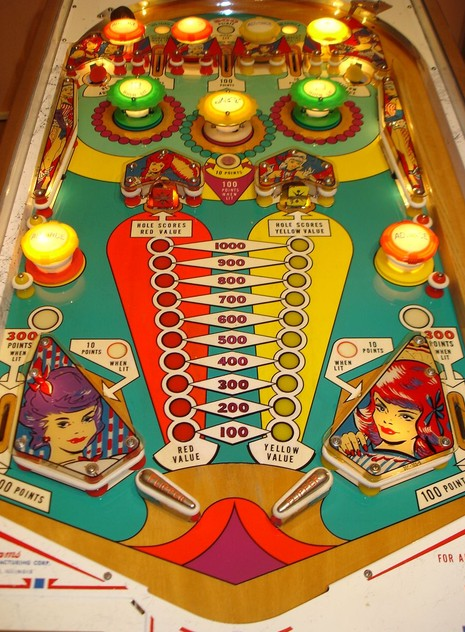

The state of the game depends on the value of the red and yellow bonuses shown in the center of the playfield. Red bonus on the left is advanced by hitting the upper left red passive bumpers, the upper left standup target, or the lower right red passive bumper. Yellow bonus on the right is advanced with the top right yellow passive bumpers, upper right standup target, and lower left passive bumper. When a bonus is advanced, its value increases by 100 points, and the opposite bonus decreases by 100 points. The values of the two bonuses always add to 1,100. To collect the red bonus, shoot the left center drop target (which scores 10 points), then shoot the hole behind it. To collect the yellow bonus, do the same on the right. Collecting a bonus resets that bonus to 100 points, which in turn maxes out the opposite bonus at 1,000 points. Collecting a bonus is also the only way to re-raise a drop target. Since collecting one bonus maxes out the other one, try to alternate collecting the red and yellow bonus, passing the high value back and forth between them.
If either bonus is maxed out at 1,000 points, which includes immediately after either bonus was collected, the out lanes and center top lane will be lit for 300 points instead of 100, and the rollover button just below the center pop bumper will score 100 points instead of 10. The value of the bonuses and status of the drop targets is not reset on its own at any time and will be preserved across players, balls, and games.
1-point switch hits anywhere in the game alternate whether the left and right top lanes or the slingshots are lit. Left and right top lanes score 10 points when not lit; when lit, they score 100 points and light the left and right green pop bumpers for 10 points instead of 1 for the rest of the ball. (The center pop bumper always scores 1.) Slingshots score 1 point or 10 when lit. There are no in lanes, and flippers back up directly to the slingshots.
There is no end of ball bonus or extra ball feature. Tilt ends game, but only for the player who tilted.
The below picture of Pretty Baby's playfield was taken from the Internet Pinball Database, where it was originally provided by Miroslaw Adamczewski.
